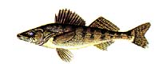

Walleye (Stizostedion vitreum) | |||
 Description The yellow walleye is so named because of its large, light-sensitive, glassy eyes, which 'glow' at night if light is shone on them. The largest of North American perches, it reaches an average weight of 1.36 kg. The maximum weight of the walleye is about 11.3 kg. The flesh of the walleye is considered to be on of the best tasting of freshwater fish. It is one of the favored angling fish -- a real 'fighter'. The walleye is commonly referred to as a pickerel, although it is not related to the pike family. The body is similar to that of the sauger; long and slender with two dorsal fins. There are numerous spots of gold covering a body which is olive brown or dark brown. As with the sauger, the first dorsal fin has spines but has a distinct black blotch on the membrane between the last two or three spines. The second dorsal fin is flecked with brown. Anal and caudal fins have a white tip on the bottom edge.
Diet The walleye mainly feeds on smaller fish and plays an important role in ecosystems by maintaining numbers of certain fish species that might otherwise become overpopulated. Yellow perch, various species of minnows, suckers, ciscoes and whitefish make up most of the diet of the walleye. Mayfly populations are kept in check during the summer months as the walleye consumes large quantities of this insect.
Reproduction A spring spawner, the walleye migrates up streams or rivers shortly after the break-up of ice. Water temperature 3.3 to 6.7 degrees Celsius helps determine exactly when spawning begins. The males are the first to arrive at the spawning grounds and remain there for a short time after the female has left. Spawning occurs at night and two or three males may accompany the female as she deposits the eggs (30 000 to 70 000 per female). The eggs hatch within one to three weeks and the young fry (6 to 8.6 mm in length) can grow up to 15 cm by the fall. Males are sexually mature in two to three years and the females reach sexual maturity in four to five years.
Habitat The range of the yellow walleye in Saskatchewan encompasses most of the lakes and rivers with the exception of the shallowest water bodies. They spend most of the day in the deeper water, where sunlight penetration is minimal. Most walleye are found at 6 to 9 m but may occupy shallower areas if there is shade formed by rocks, trees, and heavy vegetation.
| |||